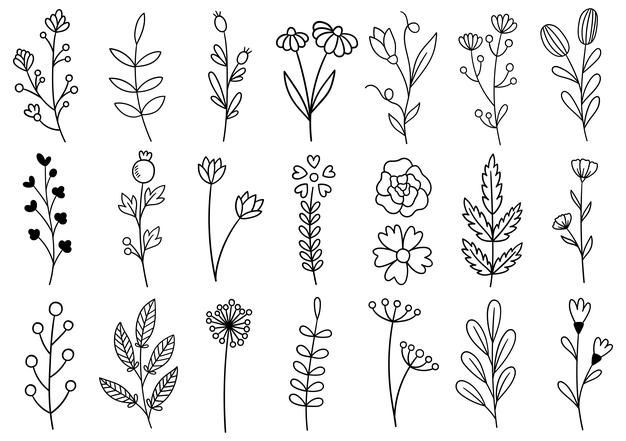
Flowers were used as a form of communication long before email, texting, instant messaging, or even phone calls. Florography, or the language of flowers, was popular in the 18th and 19th centuries. Despite the fact that we now have more ways to communicate, messages conveyed through flowers are as meaningful today as they were in the past. Each birth month flower has its own meaning and will make the recipient feel extra special.
-----------------------------------------------------------------------------------------
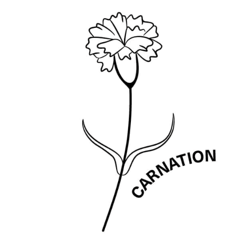
The January birth flowers are carnations and snowdrops. Which isn’t surprising considering they’re two of the very few flowers that thrive in winter! Carnations are very popular among many, with their big, ruffled petals and variety of colours, but they’re especially perfect as gifts for January babies.
Carnations have a rich history behind them too. Dating back to thousands of years, carnations held a special place in the hearts of Christians. As it was believed that the very first carnations bloomed from Mary’s tears as she wept for Jesus. While the meaning of carnations can change depending on the colour, generally they symbolise devotion, loyalty and love.
Based on your birth flowers, if you were born in January we imagine that you're someone who loves deeply and passionately. You’re probably an extremely loyal, protective friend to have around too and believe that family is everything.
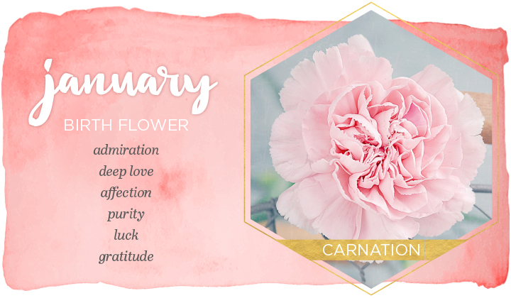
-----------------------------------------------------------------------------------------
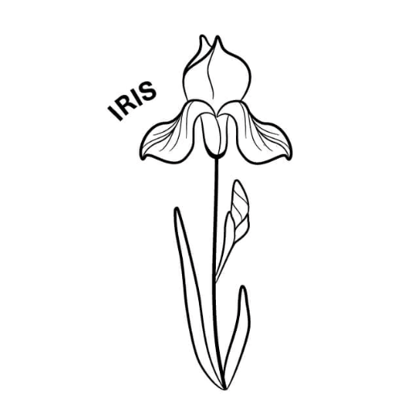
The February birth flowers are violet and iris. Because February is always associated with Valentine’s Day it always surprises people when they find out that roses aren’t actually the official birth flower of the month. But, when you consider the February birthstone is amethyst, you can see why violets are the birth month flower. Those February babies just seem to love purple tones!
The vivid violets have actually been around for centuries! And were cultivated by Ancient Greeks who used them for medicinal purposes and to make wine taste that little bit extra sweet. But, one of our favourite facts about violets are that because of their instantly-recognisable heart-shaped petals, they were used in love potions!
Nowadays, violets symbolise faithfulness, humility and spiritual wisdom. And irises symbolise eloquence, faith, wisdom and hope. So those born in February are said to be honest, humble, wise and innocent, making them pretty good people to be around.
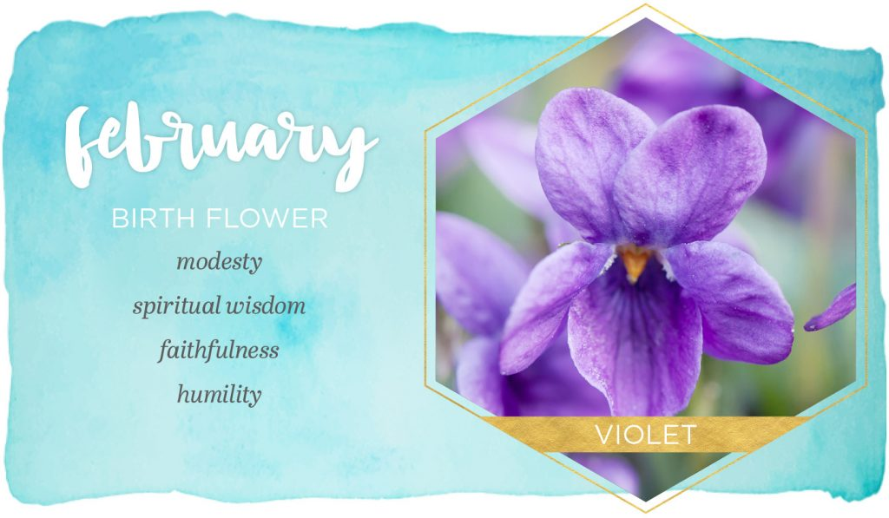
-----------------------------------------------------------------------------------------
The March birth flowers are daffodils and jonquils. As march is the month where spring officially begins it makes sense that the daffodil is the primary birth month flower for March. These little buds of sunshine are such happy flowers that they're seen as a sign of good luck and celebrated in Wales as the national flower.
Daffodils have been around in the UK since the 17th century. Even Shakespeare was a big fan of them! And the wild blooms would be sold in the streets of London by flower girls. While they are most commonly yellow, you can also find white and orange daffodils too.
Symbolising rebirth, luck, vanity and prosperity we see the people who are born in March to be happy, cheerful and optimistic folks who can easily brighten someone's day. Learn how to display your daffodils!
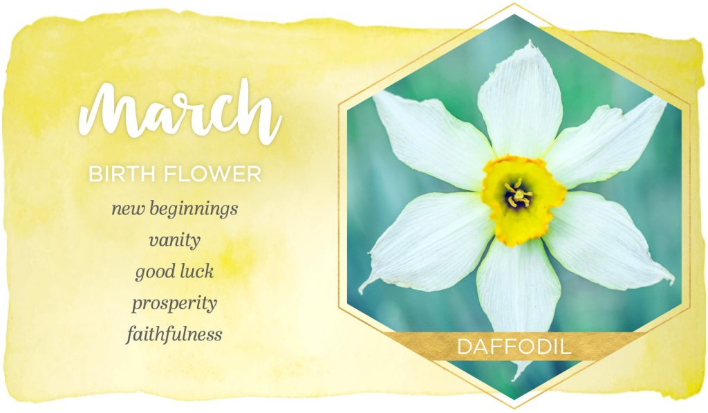
-----------------------------------------------------------------------------------------
The April birth flowers are daisy and sweet pea. While the sweet and simple daisy are more popular out in the fields than in a vase, giving someone born in April a wonderful bouquet of bright gerbera daisies will no doubt put a big smile on their face.
The sweet pea flower originated in the UK, and Southern Italy. And now they bloom all over the world after bursting into mainstream cultivation in the 17th century.
Generally, daisies represent innocence, loyalty and transformation, so we bet April babies are sweet, kind, loyal people to have in your life. Not only are daisies great to give to those born in April but as some say they also represent fertility and motherhood they're pretty popular to give to new mothers too.
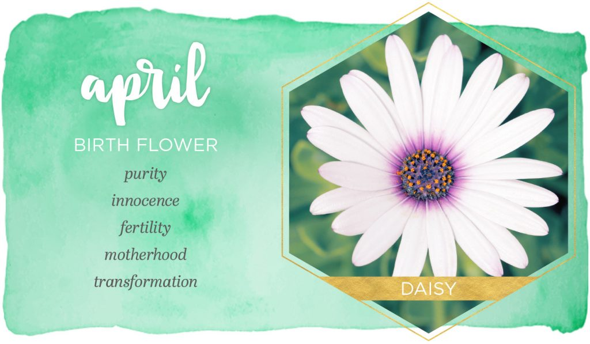
-----------------------------------------------------------------------------------------
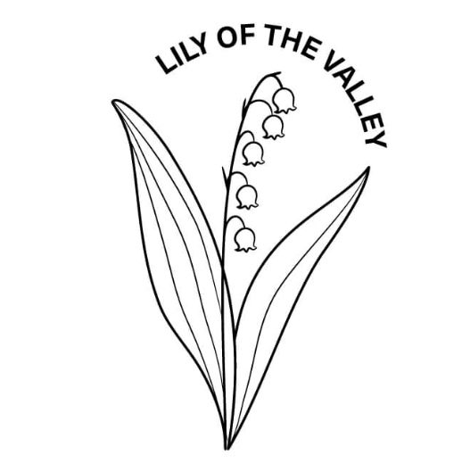
The May birth flowers are lily of the valley and hawthorn. With its delicate flowers and sweet scent, lily of the valley is a real favourite of many! And royal brides love lily of the valley too.
There are many myths and legends surrounding where lily of the valley came from. Some say they appeared where Eve's tears fell after she was evicted from the Garden of Eden. But others say that when St. Leonard fought a terrifying dragon for hours, the lilies grew wherever the brave warrior's blood fell.
Traditionally, lily of the valley is known to symbolise humility, sweetness, the return of happiness and motherhood. Making them perfect gifts for mothers if their birthday happens to be in May.
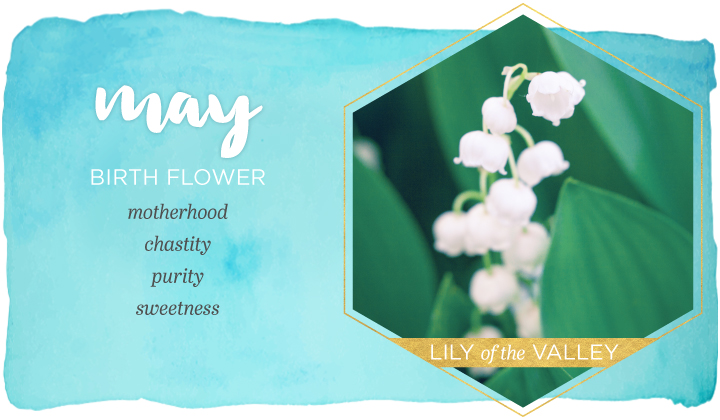
-----------------------------------------------------------------------------------------
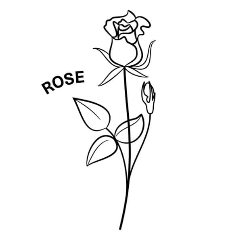
The June birth flowers are rose and honeysuckle. June babies can brag about having one of the most popular flowers of all time as their birth flower! Available in a huge range of colours, all of which have different meanings, roses are suitable for pretty much every occasion. Find out how to care for your roses, the meanings behind different colours and much more in our rose flower journal.
Roses are a classic flower that has been loved and cherished by many for centuries. Ancient Egyptians used roses as offerings to the Gods. Ancient Greeks and Romans would identify roses with love. And they have been mentioned in history books since 551 BC!
The meaning of roses can vary depending on the colour. But, overall they symbolise beauty, love and honour and devotion. They're definitely a birth flower to be proud of if you're lucky enough to be born in June!
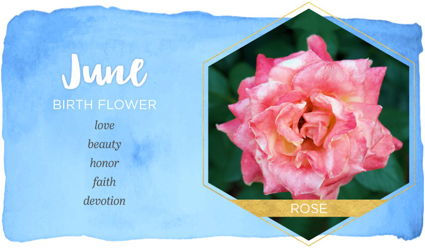
-----------------------------------------------------------------------------------------
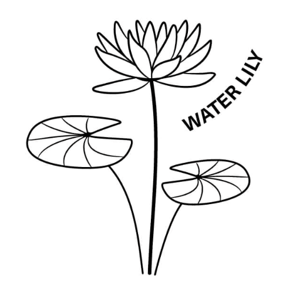
The July birth flowers are delphinium and water lily. Water lilies were named after a Greek nymph and are said to symbolise purity, unity and finding peace and balance. With associations of positivity, delphiniums are very much happy, cheerful flowers to brighten up someone's day! They're also a classic, British bloom and can be found growing wild in many woodlands across the UK.
Interestingly, delphiniums got their name from the Ancient Greeks who thought that the shape of the flower bud looked like a dolphin's nose. (Which we can totally see!) There are hundreds of different species of delphiniums these days and many of them can grow to be 6 foot tall.
Delphiniums are said to symbolise an open heart, positivity, dignity and grace. So we bet those who celebrate a July birthday are lovely, kind-hearted people to be around!
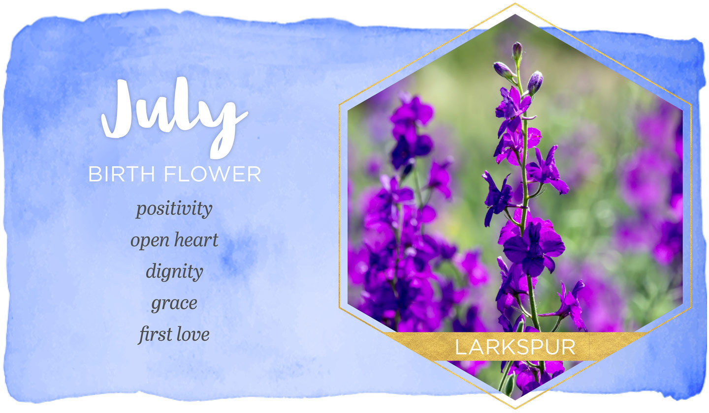
-----------------------------------------------------------------------------------------
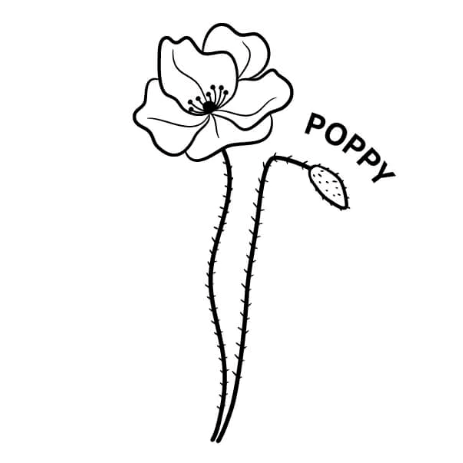
The August birth flowers are gladiolus and poppy. Available in a rainbow of gorgeous colours, these blooms are understandably very popular in the late summer months. In fact, every colour of poppy has a different meaning but in general, poppies symbolise imagination.
Gladiolus originated in South Africa in the 17th and 18th century and was named after the Latin word 'gladius' which meant sword for their distinct, pointy shape. They were very important flowers in Ancient Roman times as gladiator champions were showered with them after winning a fight.
The gladiolus flower is known for representing strength of character, honesty, generosity and moral integrity. Those born in august must be really strong, independent and fierce people! As they also symbolise infatuation and remembrance, they're the 40th-anniversary flower too.
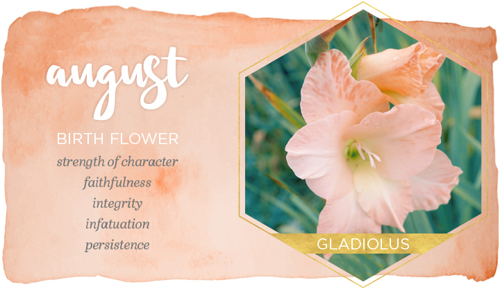
-----------------------------------------------------------------------------------------
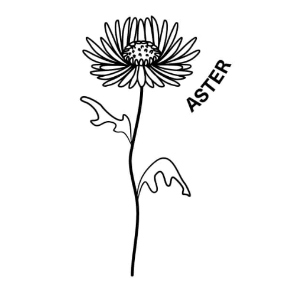
The September birth flowers are aster and morning glory. Considered the ‘star’ of the show, aster flowers were named after the Greek word for 'star' because of their shape. Asters are beautiful, dainty blooms that come in many colours but mainly pink, white, red or lilac.
Asters actually bloom all year round but during the September months, when autumn slowly starts to make its arrival, they become one of the most vibrant flowers around.
Aster flowers are well known for representing love, wisdom, faith and innocence. Making them ideal to give to friends and family who celebrate their birthday in September.
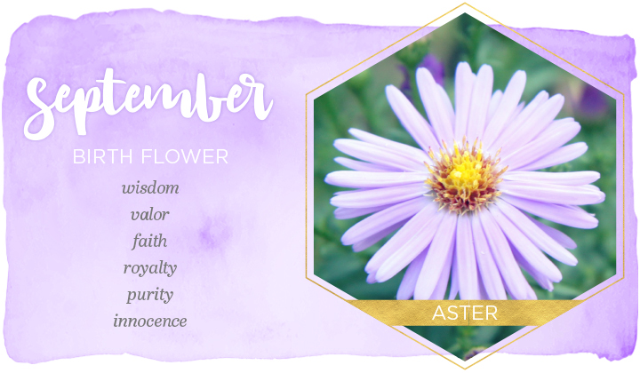
-----------------------------------------------------------------------------------------
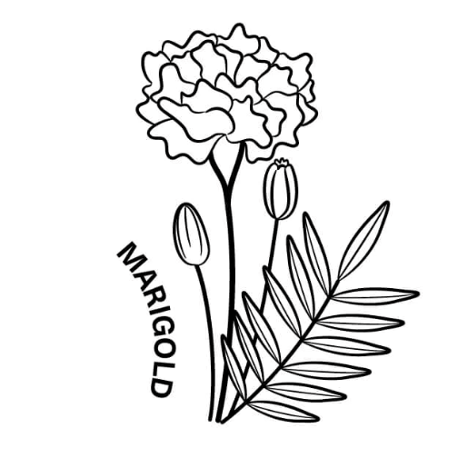
The October birth flowers are marigold and cosmos. With their beautiful autumnal colours and spicy scent, marigolds are extremely fitting for those celebrating their birthday in October and a favourite of many gardeners.
Marigolds have a really long history behind them. In fact, the earliest use of the flower was by the Aztec's who attributed magical, religious and medicinal properties to them. Marigolds were often used as medicine to help things like inflammation and skin issues.
As one of autumn's sturdiest flower, marigolds represent stubbornness and determination. But because of their bright, colourful nature, they also symbolise warmth and creativity. So if your birthday is in October you're probably a passionate, hard-working, driven person.
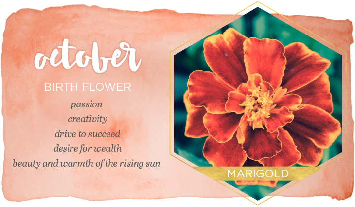
-----------------------------------------------------------------------------------------
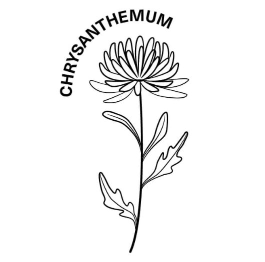
The November birth flower is the chrysanthemum. One of the world's most popular cut flowers because of its variety. Available in a huge spectrum of colours these flowers are thought to bring good luck and joy into any home!
Chrysanthemums were first cultivated in China in the 15th century. And are now so loved in both China and Japan, that they have their own special day dedicated to them which is called the Festival of Happiness.
As chrysanthemums come in so many different colours there are a lot of meanings surrounding them based on the shade. But, in general, they represent friendship, honesty and happiness!
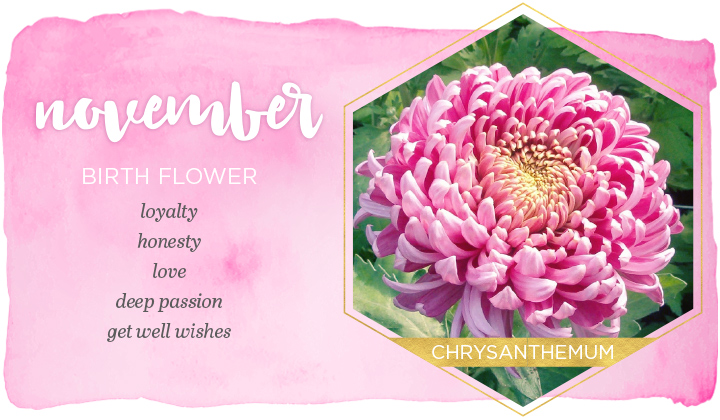
-----------------------------------------------------------------------------------------
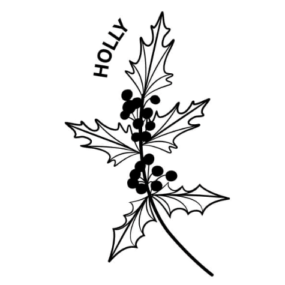
The December birth flowers are holly and narcissus. It shouldn't be surprising to hear that the birth flower for December is the joyful and festive holly! Though technically not a flower, the dark green leaves and bright red berries just scream Christmas and are perfect to include in bouquets for those celebrating a December birthday. Holly plants have been in people's homes and gardens for centuries as one of Britain's favourite festive plants.
Before they were used for decorative purposes though, they were seen as a symbol of fertility and an effective way to protect places from witches in Pagan times. Nowadays, holly is known for good fortune, peace and merriment. They make wonderful additions to December birthday bouquets and add the perfect touch of festive cheer!
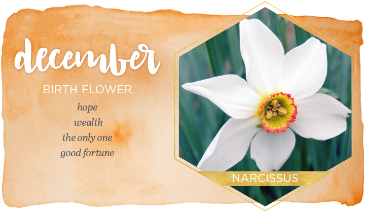